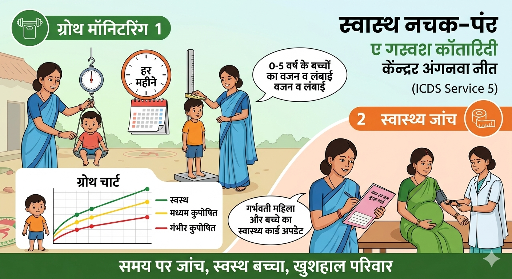

🩺 5. स्वास्थ्य जांच और ग्रोथ मॉनिटरिंग

- वजन और लंबाई: हर महीने 0 से 5 वर्ष के बच्चों की जांच ताकि कुपोषण का समय पर पता चले।
- स्वास्थ्य कार्ड: गर्भवती महिलाओं और बच्चों के कार्डों को हमेशा अपडेट रखना।
- स्थान: आपका स्थानीय आंगनवाड़ी केंद्र।
- समय: हर महीने VHND दिवस पर सुबह 9 बजे से।